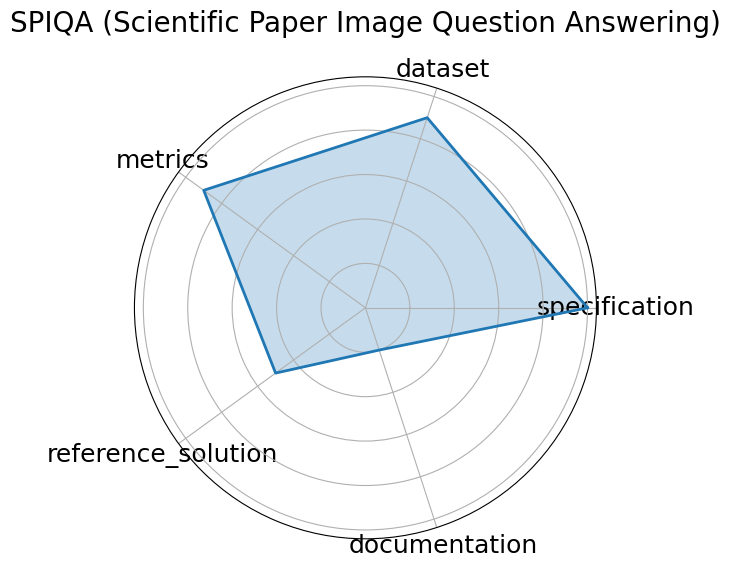

Edit: edit this entry
Date: 2024-07-12
Name: SPIQA Scientific Paper Image Question Answering
Domain: Computer Science
Focus: Multimodal QA on scientific figures
Keywords: multimodal QA, figure understanding, table comprehension, chain-of-thought
Task Types: Question answering, Multimodal QA, Chain-of-Thought evaluation
Metrics: Accuracy, F1 score
Models: Chain-of-Thought models, Multimodal QA systems
Citation:
Xiaoyan Zhong, Yijian Gao, and Suchin Gururangan. Spiqa: scientific paper image question answering. 2024. URL: https://arxiv.org/abs/2407.09413.
bibtex: ``` @misc{zhong2024spiqa,
title={SPIQA: Scientific Paper Image Question Answering},
author={Zhong, Xiaoyan and Gao, Yijian and Gururangan, Suchin},
year={2024},
url={https://arxiv.org/abs/2407.09413}}
```
Ratings:
Software:
Rating: 0
Reason: Not provided
Specification:
Rating: 5
Reason: Task administration clearly defined; prompt instructions explicitly given, no ambiguity in format or scope.
Dataset:
Rating: 4.5
Reason: Dataset is available via paper/appendix , includes train/test/valid split. FAIR-compliant with minor gaps in versioning or access standardization.
Metrics:
Rating: 5
Reason: Uses quantitative metrics Accuracy, F1 aligned with the task
Reference Solution:
Rating: 2
Reason: Multiple model results e.g., GPT-4V, Gemini reported; baselines exist, but full runnable code not confirmed for all.
Documentation:
Rating: 5
Reason: All information provided in paper
Average Rating: 3.583
Radar Plot: 